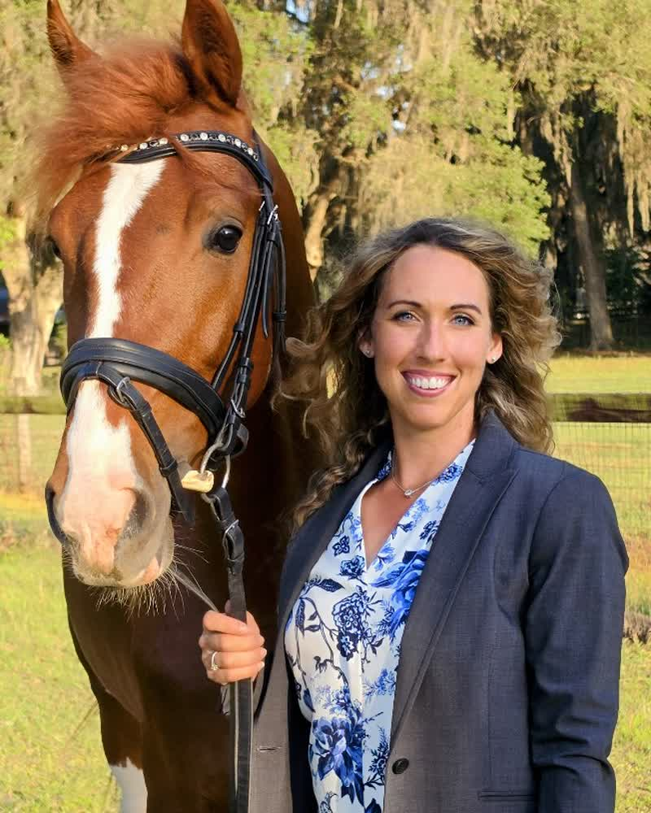

← Barn Manager shortlist · 1 of 4
Dana Whitfield
Barn Manager · 9 years · Ocala, FL

Dana has run a barn almost exactly the size of yours, in the same discipline, ten minutes down the road. She is the only one of the four who will not need the first month to learn how a competition yard runs.
She is leaving because her current owner is cutting back to four horses and there is nothing left to manage. That is a real reason, and I checked it.
One thing to know going in: she will ask you about days off in the first conversation. She has been doing six-day weeks for two years and is direct about not wanting to repeat that. I would treat it as a good sign rather than a problem.
Reference checks
3 of 3 clearEvery reference spoken to by phone, never by email. Notes are held by EquiStaff and available on request.
Experience
Download resume →Barn Manager
Current employer withheld24-horse hunter/jumper barn, Ocala FL · 2021 — now
Runs the day-to-day for 24 head: turnout, feed, farrier and vet scheduling. Manages two grooms and a working student. Keeps competition and health records.
Assistant Barn Manager
Willow Bend Equestrian, Williston FL · 2017 — 2021
Second to the manager on an 18-horse yard. Took over the barn outright for the winter season each year while the manager travelled with the show string.
Groom
Willow Bend Equestrian, Williston FL · 2015 — 2017
Show grooming and daily care. Promoted internally.
Dana is employed and looking quietly, so her current yard is withheld until she agrees to an introduction — the same way your barn stays unnamed on the advert.
What she can do
Decide on Dana
How close was Dana to what you wanted?
Pick a rating to continue.
Goes to Kaitlin only. Dana never sees this, and it is not kept on her profile.